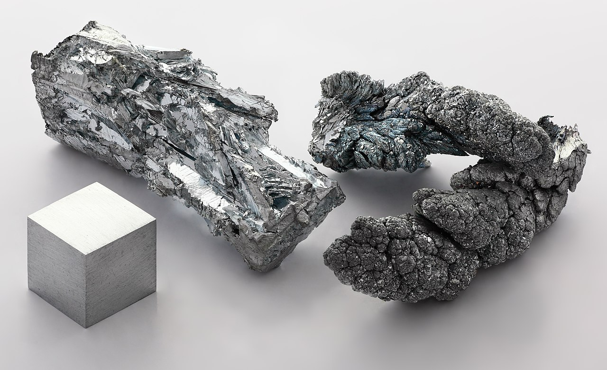

MINERAIS NO CORPO HUMANO
indice
POTÁSSIO
O potássio é um mineral essencial para o bom funcionamento do sistema nervoso, muscular, cardíaco e para o
equilíbrio do pH no sangue. Os níveis de potássio alterados no sangue podem causar diversos problemas de saúde como
cansaço, arritmias cardíacas e desmaios.
Fonte
FERRO
Para especialistas, o ferro é um nutriente essencial na vida, atuando na fabricação das células vermelhas do sangue.
Além disso, age no transporte de oxigênio para todas as células corporais. Um homem adulto saudável apresenta de 4 à
5 gramas.
Fonte

Zinco
O zinco é um mineral fundamental para a saúde, porque participa da atividade de mais de 300 enzimas e atua na
formação de proteínas, mantendo as funções do cérebro e do sistema imunológico, e melhorando a cicatrização de
feridas, por exemplo.
Fonte
